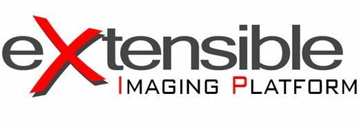

The eXtensible Imaging Platform is a C++ toolkit to build Medical Imaging and Visualization applications.
XIP was created with NCI funding and is part of the caBIG initiative.
Siemens Corporate Research Inc. contributes to and maintains the source code of XIP.
You can download the source code and the binaries at the
XIP GForge Server
Tutorials to install, use and program with Xip are available at the
XIP Wiki
Xip is organized around a number of libraries also called modules:
- core: base module built around Open Inventor
- coregl: module built on OpenGL
- dicom: module that wraps DCMTK
- itk: module that wraps the Insight Toolkit
- overlay: module for 2D annotation
- remote: module for client-server functionalities
- renderer: module for volume rendering
- vtk: module that wraps the Visualization Toolkit
- See also:
- README.txt
- XIP_LICENSE.txt